General Notes
The Land Use, Land Use Change, and Forestry (LULUCF) sheet in the Energy Policy Simulator (EPS) handles pollutant emissions and sequestration from land uses, primarily related to forests, including forest set-asides, afforestation/reforestation, avoided deforestation, and forest management. Emissions from agricultural operations are handled in the Industry sector (including emissions from fuel use and process emissions, such as methane from enteric fermentation and rice cultivation). However, conversion of land from forest to cropland or vice versa is handled in the LULUCF sector.
The LULUCF sector is constructed to be relatively flexible because different countries have very different land use challenges. For example, in the U.S., there is no net deforestation, and most existing forests are well-managed. In some countries, deforestation is a major problem. Therefore, the policies in this sector are defined based on a researched potential specific to the modeled country (set in input data), and the policy lever specifies a fraction of the potential that is achieved in each year.
The LULUCF sector does not include fuel use. Fuel use by relevant entities is handled in other sectors. For example, wood burning to heat homes in the Buildings sector, and fuel burned in the course of business operations by timber-harvesting companies is included in the “other industries” category in the Industry Sector.
LULUCF Policies
The following LULUCF policies exist in the EPS. Follow the links to view more details about each policy.
-
Forest Set-Asides: A forest set-aside program removes harvested timberland from production, converting it to unharvested forestland. By removing timberland from harvest, carbon that would otherwise be released through the wood products or in the harvesting process continues to be sequestered.
-
Afforestation and Reforestation: Reforestation is planting forests on land that is not forest, but was forest prior to human influence. Afforestation is planting forests on land that was not deforested by humans, but is climatologically able to support a forest. These policies are grouped in the EPS because the actions involved in reforestation and afforestation, as well as the resulting sequestration, are similar and can be handled by the same model structure.
-
Improved Forest Management: Improved forest management practices increase the carbon uptake and improve the ecosystem services provided by existing forestland. These might include enhanced thinning techniques, longer rotation periods, and other changes to timber harvesting.
-
Avoid Deforestation: Avoided deforestation requires implementing policies and practices that limit the legal or illegal removal of native forestland. Options include legally protecting forests through the creation of designated protected areas, requirements that private landholders maintain a minimum fraction of forest cover, and payments to landowners for providing environmental services through maintaining forest cover.
-
Peatland Restoration: Peatlands (also known as peat bogs or simply bogs) are a type of wetland. The acidic and anaerobic conditions slow the decay of organic matter that dies within the bog. Humans drain peatlands to make the land more suitable for agriculture, but this leads to rapid decomposition of organic matter and increases the risk of peat fires. Protecting or restoring peatlands can avoid these damages.
-
Forest Restoration: A degraded forest is an area of forested land that has been damaged by human activity, forest fires, pests, disease, or climate change. Degraded forests contain less stored carbon per acre and sequester less carbon per year per acre than healthy, growing forests. Forest restoration includes measures to accelerate the recovery of the degraded land (such as tree planting and building erosion control structures) as well as steps to protect the land from activities that perpetuate degradation, such as animal grazing.
Determining Change in Emissions
Each policy is set by the user to a fraction of its maximum potential, as defined in input data. We begin by loading these user settings into a single variable, subscripted by LULUCF policy.
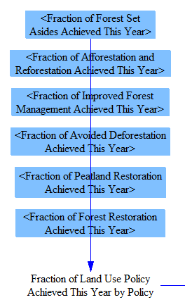
Each of these policies may affect different amounts of land each year. The user-set fraction of potential is multiplied by the maximum possible amount of land that could be affected by each policy in a single year to calculate the amount of land newly affected by each policy this year.
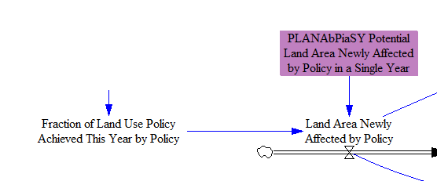
For all LULUCF policies except Improved Forest Management, any given area of land need be affected only once, and then it provides carbon sequestration benefits in each subsequent year of the model run. For example, once a given area of land has been afforested, that forest continues to grow, sequestering carbon in each year. (Eventually, an old growth forest can reach carbon neutrality, but we assume this does not happen to land areas targeted by LULUCF policies within the model run timeframe.) Therefore, to determine the sequestration from a policy in the current model year, we need to know the cumulative land area that has been affected by each policy to date, which we track with a state variable.
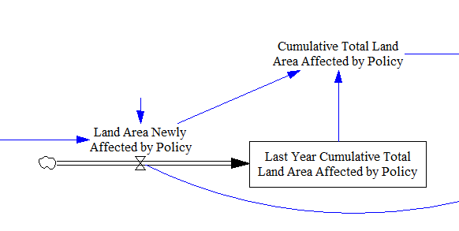
To achieve sequestration on a given area of land, the Improved Forest Management policy must be used on that area of land in each year. In this way, it is unlike the other LULUCF policies. Accordingly, for this policy, we do not track a cumulative total area of land affected. We simply multiply the area of land affected this year by the CO2 savings per unit land area, as defined by input data.
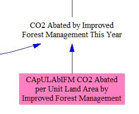
CO2 abatement from the other LULUCF policies is determined by multiplying the cumulative land area affected by an input data variable indicating the ongoing (annual) sequestration or abatement from each unit of land area that has previously been affected by each policy.
We annualize abatement from avoidance of large one-time carbon releases (such as massive wildfires or peat fires) over the time required for the forest or peatland to regenerate after a major carbon release. This avoids unrealistic, spiky results and also allows the associated policies to be treated in a way consistent with other land use sector policies.
We add in the previously calculated abatement from the Improved Forest Management policy, so that each policy’s abatement is in its own subscript element of the same variable.
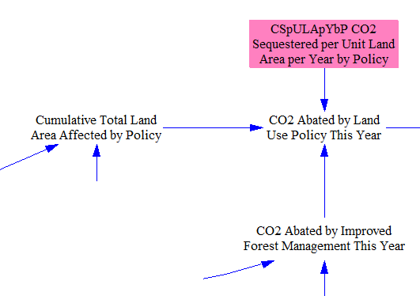
Rebound GHG Emissions
All policies that increase the amount of CO2 sequestered in forests have a slight rebound in emissions of methane and N2O. This is primarily because forest fires will release a greater quantity of CH4 and N2O when they have more fuel to combust, but also because decomposition in forest soils will release more GHGs. (Forest fires will also release more CO2 if more CO2 is sequestered in forests, but we are looking at net flows, and the net effect of these LULUCF policies on CO2 is to increase sequestration, while the net effect of the policies is to increase N2O and CH4 emissions.) In CO2e terms, on a 100-year GWP timeframe, the increase in CH4 and N2O offsets only about 2% of the net sequestration of CO2, so the rebound is very minor. Nonetheless, we account for it as a matter of completeness. The relevant structure is shown below:
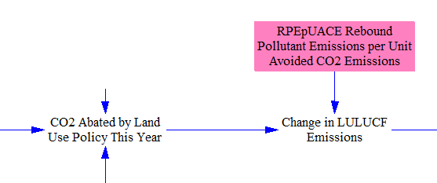
Summing Up Emissions
We take the BAU anthropogenic (human-caused) GHG emissions as input data and add the changes in emissions due to all of the policies to find the total quantity of anthropogenic LULUCF emissions in the policy case.
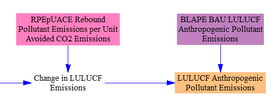
LULUCF Policy Implementation and Maintenance Costs
LULUCF policies may have one or two types of costs associated with them:
-
the implementation cost, which is the cost per unit land area to undertake the policy
-
the maintenance cost, which is an ongoing cost to maintain the benefits of land previously affected by the policy
For example, the implementation cost of the afforstation/reforestation policy may include things such as hiring workers, buying tree saplings, and paying for equipment to physically plant the trees. The ongoing maintenance costs may include activities such as applying fertilizer, pest control, or irrigation, which need to be repeated every year.
Not every policy has each type of cost. Which policies have costs and the magnitude of the costs can vary greatly between different EPS models representing different geographies. (Improved Forest Management can only have implementation costs, not maintenance costs, as this policy must be newly applied to all affected land areas each year.)
Each policy’s implementation cost is multiplied by the land area newly affected by the policy this year.
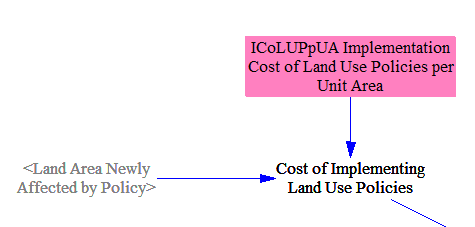
Each policy’s maintenance cost is multiplied by the cumulative total land area affected by the policy to date.
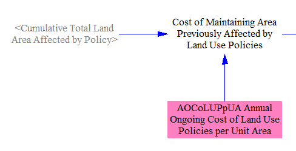
Finally, these costs are assigned to cash flow entities, in proportion to the fraction of all forests owned by each entity. For instance, if government owns 50% of the forests, government will bear 50% of the costs of LULUCF policies.
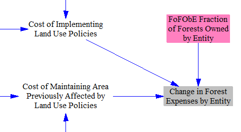
Lost Land Value
In other sectors in the EPS, we consider cash flows caused by the policies enabled by the user: that is, actual payments of money from one actor to another. In the LULUCF sector, some of the important financial impacts pertain to the value of land, but do not cause specific changes in cash flows, at least until the land is sold (which is not within the model scope, and which may never happen for many government-owned forests). Accordingly, we include a calculation of “lost land value” that is separate from the “cash flow” calculations for the LULUCF sector.
Whether and to what extent each policy affects the value of the land is governed by an input variable, CiLVpUAAbP Change in Land Value per Unit Area Affected by Policy. These values may be positive or negative. For example, the Forest Restoration policy may improve land value, by upgrading a degraded forest to a healthy forest. However, the Forest Set-Asides policy may reduce land value, since economically productive timberland is often worth more per acre than protected forest. (The Improved Forest Management policy, which does not make permanent changes to the land, has no impact on land value.)
We multiply the cumulative total amount of land affected by each policy by the change in land value per unit area caused by that policy to find the cumulative total change in land value caused by each policy to date.
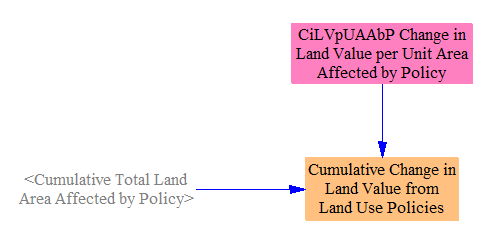
Allocating Changes in Expenditures and Revenues
As noted above, LULUCF policy expenditures were allocated to cash flow entities proportionate to their ownership of forestlands. We assign the non-energy industries’ expenditures to ISIC 01T03, which includes the agriculture and forestry sectors, the major corporate land-owners of relevance for LULUCF policies.
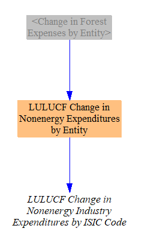
The change in revenues from LULUCF policies is all allocated to the “non-energy industries” cash flow entity, and specifically, ISIC 01T03. This is because that ISIC code includes agriculture, forestry, and related activities, and these are the companies that would be providing services such as forest maintenance, restoration, or afforestation.
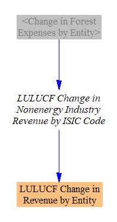
The labor and government (tax) shares of these revenues are separated out on the Cross-Sector Totals sheet.